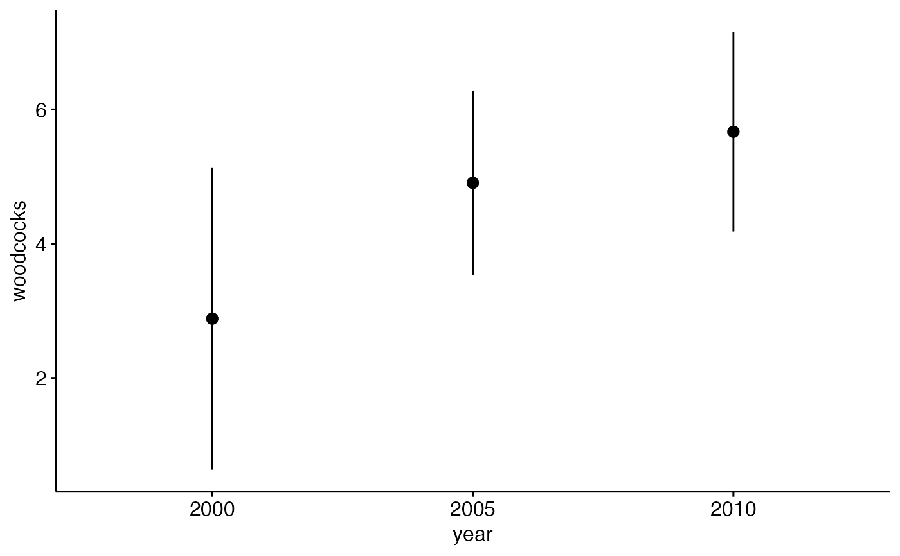

woodcock_MI_3_years.RdThere are ~150 routes in Michigan from three years: 2000, 2005 and 2010. 50 were randomly chosen from 2000, a different 50 for 2005, and the remainder for use for 2010. Only routes where all 10 stops were acceptable were used.
woodcock_MI_3_years
A data frame with 23 columns, including:
Year of survey: 2000, 2005 or 2010
State. Only MI is used.
Route number within Michigan
County within Michigan
Status of route as "route run" (RR) or "constant zero" (CZ). "statuscd" in original USGS data
Number of woodcocks seen on route; "accpwdck" for "acceptable woodcocks" in original USGS data
Number of acceptable stops during survey that meet quality control critera. "accpstops" in original USGS data. Only routes with all stops being acceptable used for this dataset
https://migbirdapps.fws.gov/mbdc/databases/db_selection.html
The official USGS blurb is: "The American Woodcock (Scolopax minor) Singing-Ground Survey, conducted by the U.S. Fish and Wildlife Service, exploits the conspicuous courtship display of the male woodcock. The survey consists of numerous routes in the eastern half of the U.S. and Canada, which are surveyed in the spring. Counts of singing male woodcock along the routes provide an index to woodcock abundance, and are used to estimate woodcock population trends for states, provinces, management regions, and the continent. The survey is the major source of information considered in the annual setting of woodcock hunting seasons. These data can also be used to examine the effects of weather, landscape change, and other factors on woodcock population abundance."
USGS population reports are available as of fall 2017 at http://www.ruffedgrousesociety.org/Woodcock-Facts#popu
Sauer, J. R., and J. B. Bortner. 1991. Population trends from the American Woodcock Singing-ground Survey, 1970-88. J. Wildl. Mange. 55:300-312.
# Note: see help files for other datasets, egg ?pikas for examples of exploring ## data with boxplots and histograms. ## Make year a factor woodcock_MI_3_years$year <- factor(woodcock_MI_3_years$year) ## Plot means with 95% confidence intervals library(ggplot2) library(ggpubr) ggerrorplot(woodcock_MI_3_years, x = "year", y = "woodcocks", desc_stat = "mean_ci", add = "mean")#> Warning: `fun.y` is deprecated. Use `fun` instead.#> Warning: `fun.ymin` is deprecated. Use `fun.min` instead.#> Warning: `fun.ymax` is deprecated. Use `fun.max` instead.## 1-way ANOVA ## null model model.null <- lm(woodcocks ~ 1, data = woodcock_MI_3_years) ## model of interest model.alt <- lm(woodcocks ~ year, data = woodcock_MI_3_years) ## compare models anova(model.null, model.alt)#> Analysis of Variance Table #> #> Model 1: woodcocks ~ 1 #> Model 2: woodcocks ~ year #> Res.Df RSS Df Sum of Sq F Pr(>F) #> 1 93 2019.7 #> 2 91 1899.4 2 120.33 2.8825 0.06112 . #> --- #> Signif. codes: 0 ‘***’ 0.001 ‘**’ 0.01 ‘*’ 0.05 ‘.’ 0.1 ‘ ’ 1## Pairwise comparisons ### no corrections for multiple comparisons pairwise.t.test(x = woodcock_MI_3_years$woodcocks, g = woodcock_MI_3_years$year, p.adjust.method = "none")#> #> Pairwise comparisons using t tests with pooled SD #> #> data: woodcock_MI_3_years$woodcocks and woodcock_MI_3_years$year #> #> 2000 2005 #> 2005 0.097 - #> 2010 0.020 0.495 #> #> P value adjustment method: none### Bonferonni correction pairwise.t.test(x = woodcock_MI_3_years$woodcocks, g = woodcock_MI_3_years$year, p.adjust.method = "bonferroni")#> #> Pairwise comparisons using t tests with pooled SD #> #> data: woodcock_MI_3_years$woodcocks and woodcock_MI_3_years$year #> #> 2000 2005 #> 2005 0.29 - #> 2010 0.06 1.00 #> #> P value adjustment method: bonferroni## Tukey test ### re-fit model with aov() model.alt.aov <- aov(woodcocks ~ year, data = woodcock_MI_3_years) ### TukeyHSD() on model from aov() TukeyHSD(model.alt.aov)#> Tukey multiple comparisons of means #> 95% family-wise confidence level #> #> Fit: aov(formula = woodcocks ~ year, data = woodcock_MI_3_years) #> #> $year #> diff lwr upr p adj #> 2005-2000 2.0216346 -0.85244785 4.895717 0.2199474 #> 2010-2000 2.7820513 -0.01954022 5.583643 0.0520378 #> 2010-2005 0.7604167 -1.88427537 3.405109 0.7727774 #>### Plot effect sizes #plotTukeysHSD(TukeyHSD(model.alt.aov))